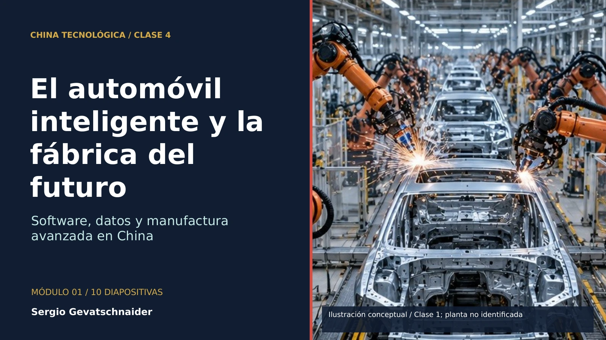
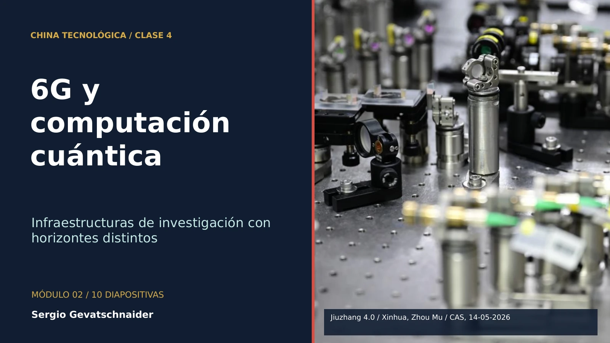
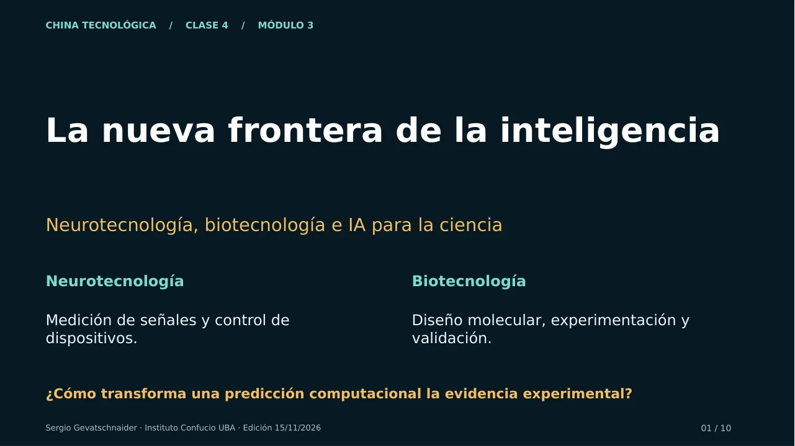
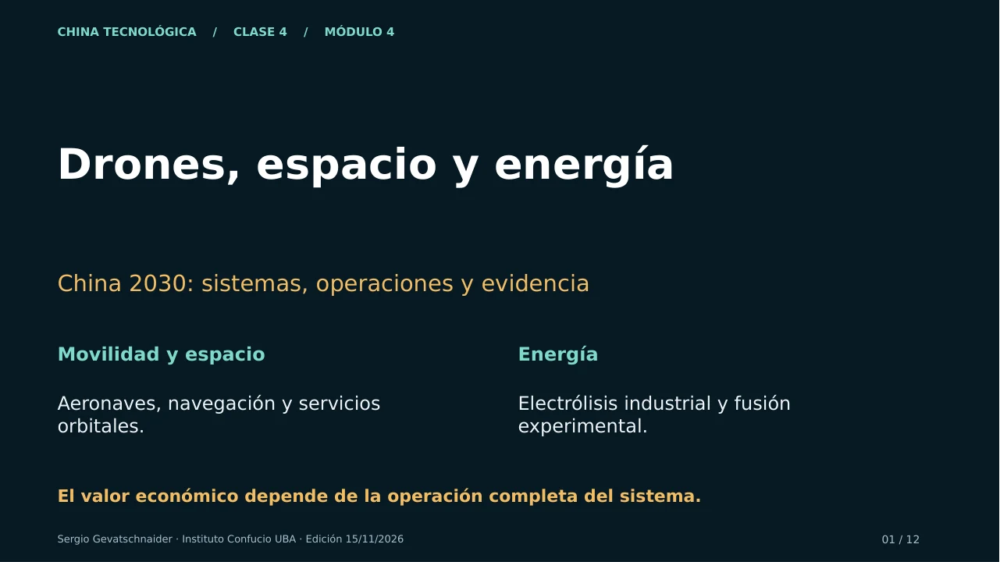

Módulo 1 · 8 diapositivas editables
Clase final · 17 de noviembre de 2026
Cuatro módulos conectan conceptos, evidencia y experimentos. Consultá la presentación, contrastá las fuentes, mirá una demostración y ejecutá su laboratorio.

Módulo 1 · 8 diapositivas editables

Módulo 2 · 7 diapositivas editables

Módulo 3 · 10 diapositivas editables

Módulo 4 · 12 diapositivas editables
Complemento del módulo 1: latencia y distancia de detención. Modelo físico ideal para comparar software, velocidad y adherencia.